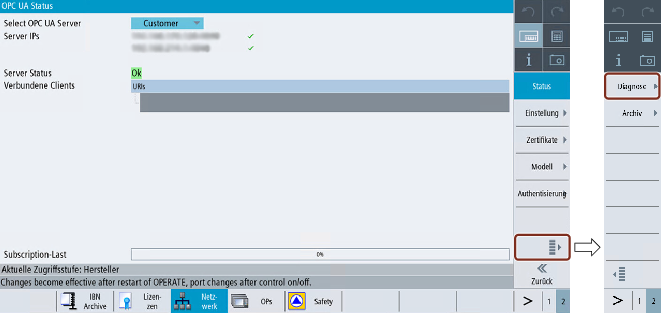
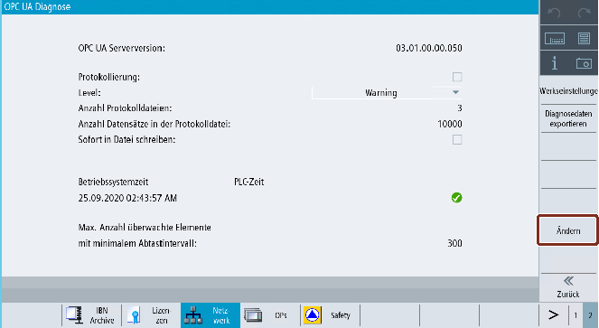
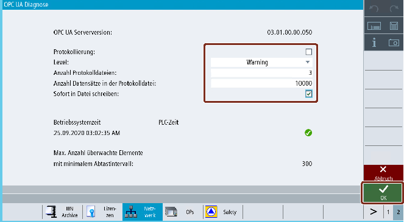
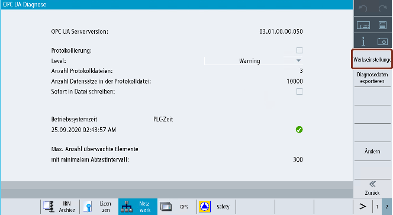
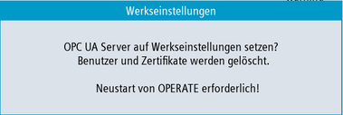
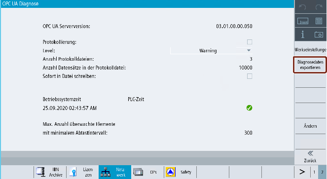
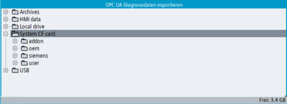
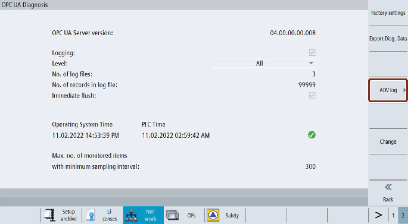
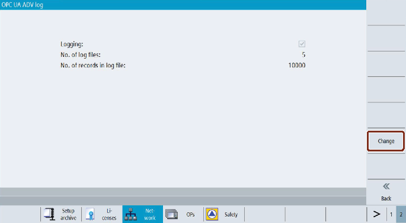

Übersicht
Der Diagnosebildschirm unterstützt die Fehlersuche und Wartung durch Siemens für den OEM. Diagnosefunktionen werden nur für Servicezwecke verwende.
Vom Diagnosebild aus kann der Benutzer:
-
das OPC-UA-Server-Logging aktivieren oder deaktivieren.
-
das OPC-UA-Server-Logging konfigurieren.
-
den OPC UA Server auf Werkseinstellungen zurücksetzen.
-
die Diagnosedaten in einen externen Datenspeicher exportieren (z. B. USB/Netzwerkfreigabe).
-
Die OPC UA Advanced-Protokollierung aktivieren oder deaktivieren und Parameter ändern.
| Hinweis |
|
Der Softkey "Diagnose" ist standardmäßig nur für die Zugriffsstufen Hersteller, Wartung und Benutzer sichtbar. |
OPC-UA-Diagnose
-
Drücken Sie den Softkey "OPC UA".
-
Drücken Sie den erweiterten Softkey wie im folgenden Bild dargestellt.
Hinweis Wenn dieser Softkey deaktiviert ist, bedeutet dies, dass die OPC-UA-Server-Lizenz nicht aktiv ist.
-
Drücken Sie den Softkey "Diagnose".
Hinweis Der Softkey "Diagnose" wird nicht angezeigt, wenn der OPC UA Server nicht aktiv ist. Der Benutzer muss den OPC UA Server vom Einstellungsbild von OPC UA aus aktivieren.
Softkey "Diagnose"
-
Das Dialogfeld "OPC-UA-Diagnose" wird angezeigt. Drücken Sie den Softkey "Ändern".
Softkey "Ändern"
-
Nehmen Sie die erforderlichen Einstellungen für die Protokollierung vor.
Hinweis Die Änderungen werden erst nach einem Neustart von SINUMERIK Operate wirksam.
Aktivieren Sie die Option "Protokollierung".
Feld
Beschreibung
"OPC-UA-Server-Version"
Zeigt die installierte Version des OPC UA Servers.
"Protokollieren"
Setzen Sie das Häkchen, um die Protokollierung zu aktivieren, oder entfernen Sie das Häkchen, um sie zu deaktivieren.
Durch Aktivieren der Protokollierung wird das Protokoll des OPC UA Servers erzeugt.
"Ebene"
Wählen Sie die Ebenenart aus der Klappliste aus. In der Klappliste stehen folgende Ebenenarten zur Auswahl:
Keine
Fehler
Warnung (standardmäßig)
System
Info
Debug
Inhalt
Alle
Das Protokoll wird entsprechend der ausgewählten Ebenenart generiert.
Es wird kein Protokoll erzeugt, wenn Sie die Protokollierung aktiviert und in der Liste "Keine" ausgewählt haben.
"Anzahl Protokolldateien"
Geben Sie als Anzahl der Protokolldateien eine Zahl im Bereich 3–10 ein.
Wenn der Benutzer "10" auswählt und die 10. Protokolldatei wird erzeugt, dann wird dadurch die 1. Protokolldatei überschrieben.
"Anzahl Datensätze in Protokolldatei"
Geben Sie die Anzahl der Datensätze in der Protokolldatei als Zahl im Bereich 1000–99999 ein.
Wenn der Benutzer "99999" auswählt und die 99999. Aufzeichnung wird bereits erzeugt, dann wird dadurch die 1. Aufzeichnung überschrieben.
"Sofort in Datei schreiben"
Setzen Sie das Häkchen, um das sofortige Schreiben in die Datei zu aktivieren, oder entfernen Sie das Häkchen, um es zu deaktivieren.
Durch Aktivierung des sofortigen Schreibens wird jede Aufzeichnung sofort in die Protokolldatei geschrieben.
Diese Option sollte nur für die unverzügliche Protokollierung ausgewählt werden.
"Betriebssystemzeit und PLC-Zeit"
Datum und Uhrzeit des Betriebssystems sowie Datum und Uhrzeit der PLC werden angezeigt.
Das Häkchen-Symbol zeigt an, dass die PLC-Zeit mit der Zeit des Betriebssystems (HMI Operate) synchronisiert ist.
Sind Datum und Uhrzeit nicht synchronisiert, wird das Symbol
 angezeigt. Es weist darauf hin, dass die Zeit aktualisiert werden muss.
angezeigt. Es weist darauf hin, dass die Zeit aktualisiert werden muss. "Maximale Anzahl überwachter Elemente bei minimalem Abtastintervall"
Dieses Feld gibt an, wie viele Elemente bei Verwendung des minimalen Abtastintervalls maximal überwacht werden können.
-
Klicken Sie anschließend auf "OK".
-
Die Änderungen werden erst nach einem Neustart von SINUMERIK Operate wirksam.
| Hinweis |
|
Wenn die OPC-UA-Server-Protokollierung mehr als 30 Tage lang aktiviert ist, wird sie automatisch beim nächsten HMI-Neustart deaktiviert. |
OPC UA Server auf Werkseinstellungen zurücksetzen
Mithilfe dieser Einstellung kann der Benutzer die OPC-UA-Konfiguration der SINUMERIK auf ihren Initialzustand zurücksetzen. Das Zurücksetzen ist ein nützlicher Schritt, wenn die aktuelle OPC-UA-Konfiguration nicht gültig ist und zurückgesetzt werden muss.
Der Benutzer sollte dies als letzte Möglichkeit nutzen, den Initialzustand der Konfiguration des OPC UA Servers wiederherzustellen. Hierbei werden alle Einstellungen, IP-Adressen, Ports und Zertifikate gelöscht und die Standardwerte zurückgeschrieben.
Nach dem Neustart von SINUMERIK Operate muss der OPC UA Server mit den erforderlichen Änderungen erneut aktiviert werden.
| Hinweis |
|
Beim Rücksetzen auf die Werkseinstellungen werden die Modelleinstellungen auf die Standardwerte zurückgesetzt und die Modelleinstellungen können mit Benutzerzugriff nicht geändert werden. |
| Hinweis |
|
Vergewissern Sie sich, dass Sie ein OPC UA-Archiv haben, bevor Sie mit dem Rücksetzen des OPC UA Servers auf die Werkseinstellungen beginnen. |
-
Drücken Sie den Softkey "OPC UA".
-
Drücken Sie den erweiterten Softkey.
-
Drücken Sie den Softkey "Diagnose". Das Dialogfeld "OPC-UA-Diagnose" wird angezeigt.
-
Drücken Sie den Softkey "Werkseinstellungen".
Softkey "Werkseinstellungen"
-
Das Popup-Fenster Werkseinstellungen wird angezeigt.
Popup-Fenster "Werkseinstellungen"
Hinweis Wenn der Benutzer ein Rücksetzen auf die Werkseinstellungen durchführt, wird der OPC UA Server auf seine Standardeinstellungen zurückgesetzt. In diesem Fall muss der Benutzer den OPC UA Server erneut über das Einstellungsbild von OPC UA aktivieren.
-
Klicken Sie anschließend auf "OK". Am unteren Rand wird eine Statusmeldung angezeigt: "Änderungen werden nach OPERATE-Neustart wirksam".
Diagnosedaten exportieren
Mit dieser Funktion werden die OPC UA-Konfiguration, die Protokolldateien und weitere Diagnoseinformationen aus dem SINUMERIK-System an den ausgewählten Speicherort im SINUMERIK-Dateisystem exportiert.
Die Diagnosedaten können zur Analyse von Details des Systemverhaltens oder zur Ursachenanalyse bei Problemen ausgewertet werden.
-
Drücken Sie den Softkey "OPC UA".
-
Drücken Sie den erweiterten Softkey.
-
Drücken Sie den Softkey "Diagnose". Das Dialogfeld "OPC-UA-Diagnose" wird angezeigt.
-
Drücken Sie den Softkey "Diagn.-Daten exportieren".
Softkey "Diagn.-Daten exportieren".
-
Das Popup-Fenster "OPC-UA-Diagnosedaten exportieren" wird angezeigt.
Popup-Fenster "OPC-UA-Diagnosedaten exportieren"
-
Wählen Sie den Speicherort im SINUMERIK-Dateisystem aus.
-
Klicken Sie anschließend auf "OK".
-
Die Diagnosedaten werden in diesem Ordner (entsprechend dem ausgewählten Speicherort im SINUMERIK-Dateisystem) im Format "OpcUaDiagnosisData_Jahr_Monat_Tag-Stunde_Minute_Sekunde" gespeichert, zum Beispiel: "OpcUaDiagnosisData_2020_06_22-11_12_56".
Einstellungen für die OPC UA Advanced-Protokollierung
Wenn Sie die zusätzliche Lizenz für OPC UA Advanced aktiviert haben, können Sie die Parameter für die OPC UA Advanced-Protokollierung festlegen.
-
Drücken Sie den Softkey "OPC UA".
-
Drücken Sie den erweiterten Softkey.
-
Drücken Sie den Softkey "Diagnose". Das Dialogfeld "OPC-UA-Diagnose" wird angezeigt.
-
Drücken Sie anschließend den Softkey "ADV-Protokoll".
Softkey "ADV-Protokoll"
-
Das Dialogfeld "OPC-UA Adv-Protokoll" wird angezeigt. Sie können die Einstellungen für die OPC UA Advanced-Protokollierung lesen.
Dialogfeld "ADV-Protokoll"
-
Drücken Sie den Softkey "Ändern".
-
Aktivieren Sie die OPC UA Advanced-Protokollierung über das entsprechende Kontrollkästchen.
-
Legen Sie die Parameter für die OPC UA Advanced-Protokolldatei fest.
Parameter
Wert
Min.
Max.
Anzahl Protokolldateien
3
10
Anzahl Datensätze in der Protokolldatei
10.000
99.999
Hinweis Maximalwerte erreicht
Wenn die Maximalanzahl von Protokolldateien erreicht ist und jede Datei die maximale Anzahl von Datensätzen enthält, wird die älteste Protokolldatei automatisch gelöscht und eine neue Protokolldatei wird erstellt.
-
Drücken Sie "OK". Die Einstellungen für die OPC UA Advanced-Protokollierung werden gespeichert.
Weitere Informationen zur OPC UA Advanced-Protokollierung finden Sie in Kapitel OPC UA Advanced-Protokollierung.